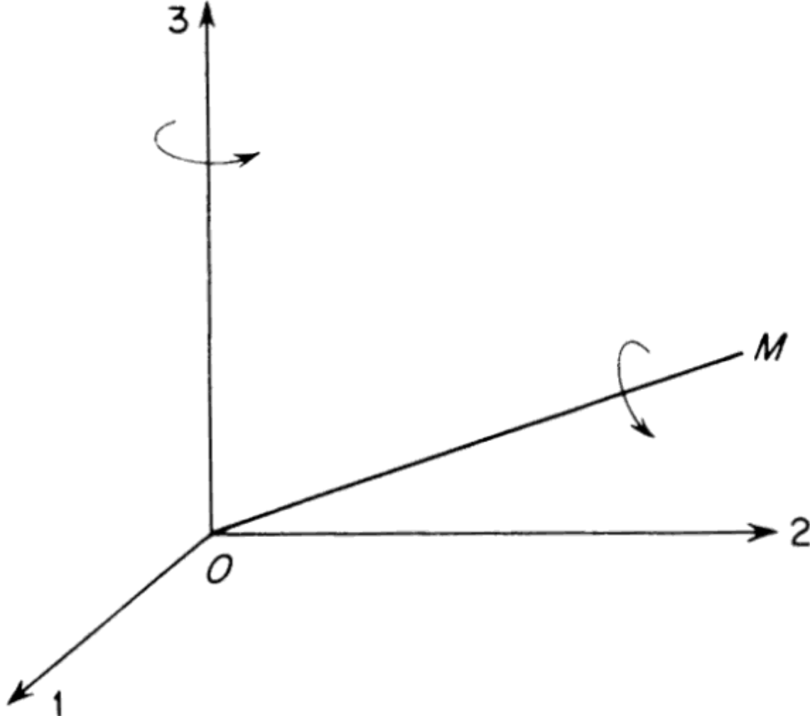

However, this level of generality is unnecessary when the stress tensor is symmetric, and the fluid is isotropic.
An isotropic tensor is one whose components are unchanged by rotation of the frame of reference.
The trivial cases of this are the tensors of all orders whose components are all zero. All tensors of the zeroth order are isotropic and there are no first order isotropic tensors.
We have already met the only isotropic second order tensor, namely, \( \delta_{ij} \), but it is of interest to prove that it is the only one.
In an isotropic fluid medium, the stress–strain rate relationship is independent of the orientation of the coordinate system. This is only possible if \( K_{ijmn} \) is an isotropic tensor. All fourth-order isotropic tensors must be of the form
\[
K_{ijmn} = \lambda \delta_{ij} \delta_{mn} + \mu \delta_{im} \delta_{jn} + \gamma \delta_{in} \delta_{jm}
\]
(see Aris, 1962, pp. 30–33 for the proof), where \( \lambda, \mu \), and \( \gamma \) are scalars that depend on the local thermodynamic state. In addition, \( \tau_{ij} \) is symmetric in \( i \) and \( j \),
so \(\tau_{ij} = K_{ijmn} S_{mn}\) requires that \( K_{ijmn} \) also be symmetric in \( i \) and \( j \), too.
1R. Aris. Vectors, Tensors, and the Basic Equations of Fluid Mechanics Prentice-Hall, Englewood Cliffs, NJ (1962). (The basic equations of motion and the various forms of the Reynolds transport theorem are derived and discussed.)